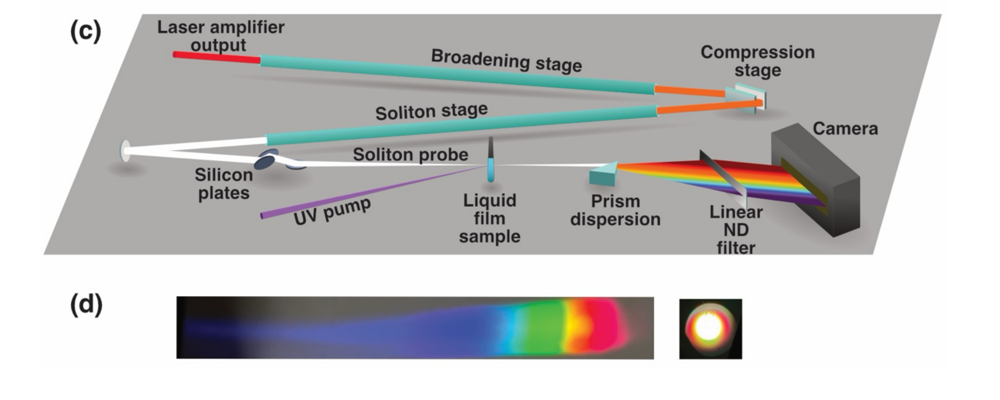

        <section>
          <h3 style="margin: 0 0 0.4em;">The Multi-Octave Continuum Probe</h3>
          
          <p class="slide-footnote"><a href="https://doi.org/10.1021/acs.jpclett.5c04072">Godínez Castellanos <em>et al.</em>, <em>J. Phys. Chem. Lett.</em> <strong>17</strong>, 2634&ndash;2643 (2026)</a></p>
          <aside class="notes">
            <ul>
              <li>Panel (c): the actual TA beamline — HCF broadening/soliton stages, Si-plate spectral shaping, liquid jet sample, prism spectrograph, camera.</li>
              <li>Panel (d): the dispersed spectrum on the camera — visibly continuous from blue-UV through to red/NIR, and the collimated spatial mode.</li>
              <li>Walk through it live: amplifier output -> broadening stage compresses the pulse -> soliton stage generates the multi-octave continuum, fission arrested at the fibre exit (as established two slides ago) -> Si plates selectively attenuate visible/NIR to protect the sample from the huge pulse energy while preserving the weak UV -> liquid film sample where the UV pump and soliton probe cross -> prism (not grating, to avoid diffraction-order overlap) disperses the probe onto the camera.</li>
              <li>This is the same fission physics used for RDW/VUV generation, just tuned to keep the continuum broad and un-fissioned for probing rather than isolating a narrowband dispersive wave.</li>
            </ul>
          </aside>
        </section>
